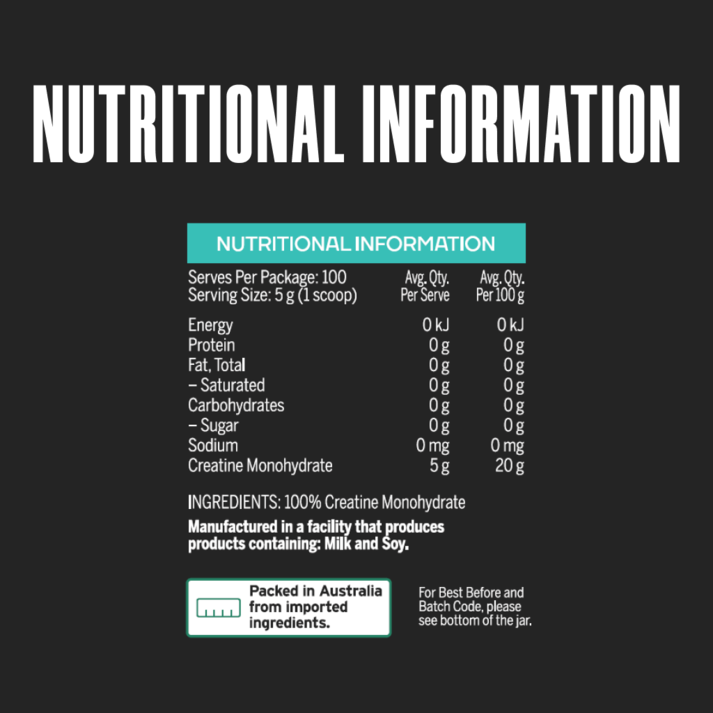
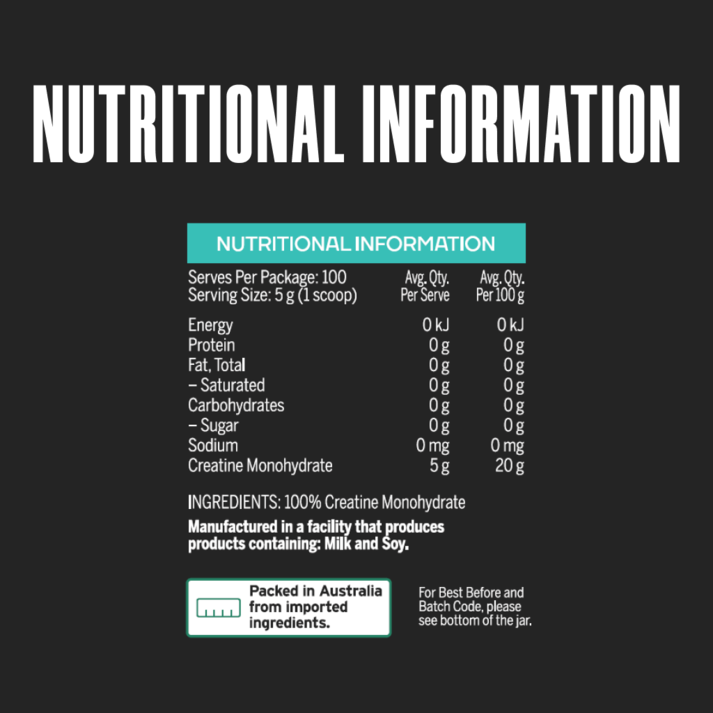

EMRALD LABS CREATINE MONOHYDRATE
Make your training count with Emrald Labs Creatine Monohydrate. This popular supplement boosts energy production and muscle strength, giving you an edge in the gym and enhancing your progress. Try it today and experience the insane benefits it can provide!
Creatine monohydrate works by increasing energy availability in your body during short bursts of activity. Creatine monohydrate works in the pathway of producing ATP, which is the main energy currency of the human body. By ensuring creatine stores are saturated, this means more energy is available to you while you are working through a set of bench press or squats.
The main benefits of creatine are experienced during high intensity or resistance training. These include:
- supporting energy production
- increasing lean body mass
- enhancing muscle strength
- boosting recovery
- improving physical performance
- supporting general health and wellbeing
Creatine can also assist with body composition and increasing muscle size due to the hypertrophy of the muscles. It is important to note that this is a flow on effect from training hard in the gym with progressive overload and effective programming.
$18.90